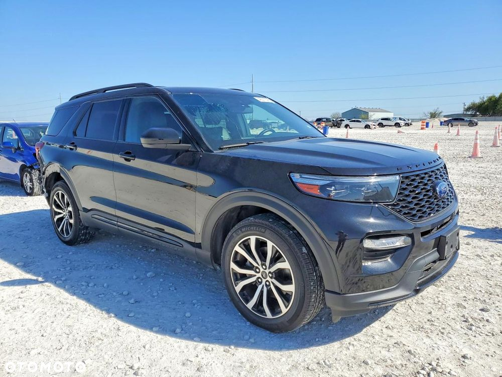
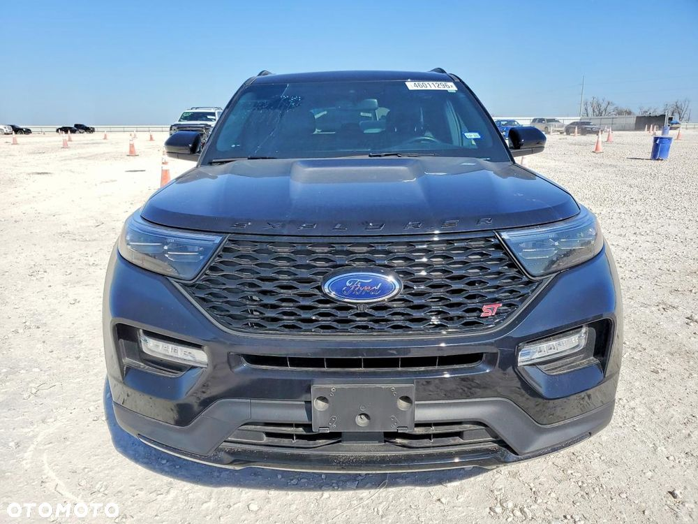
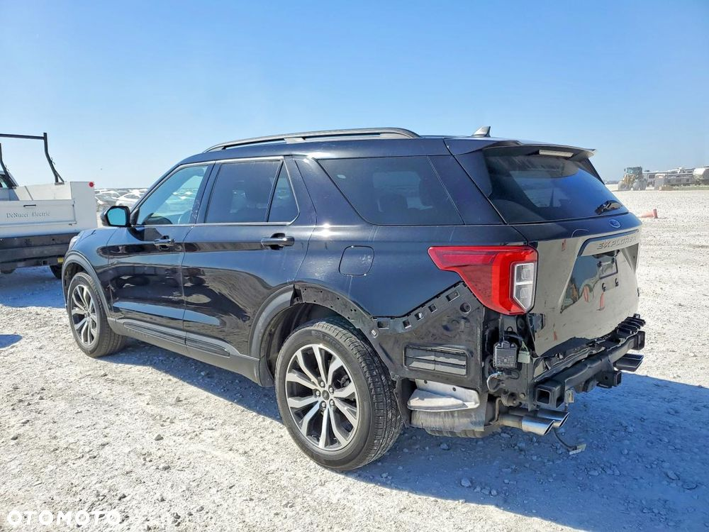
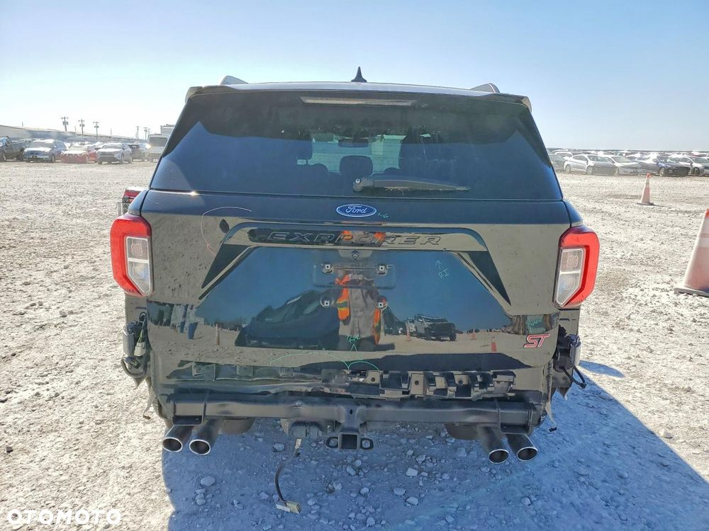
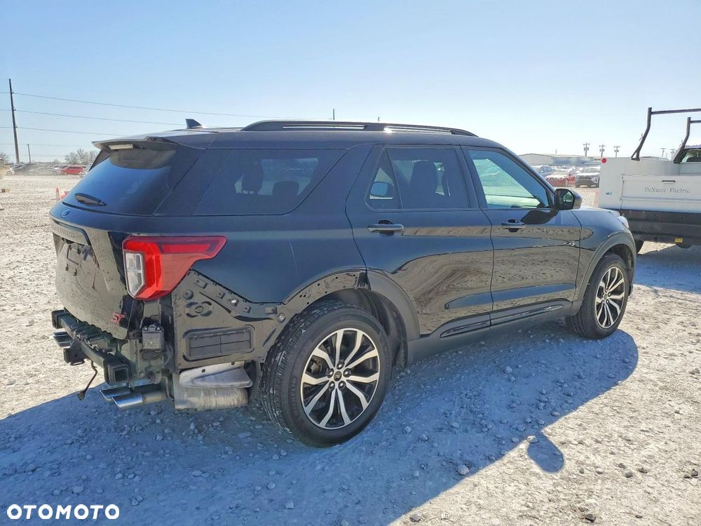
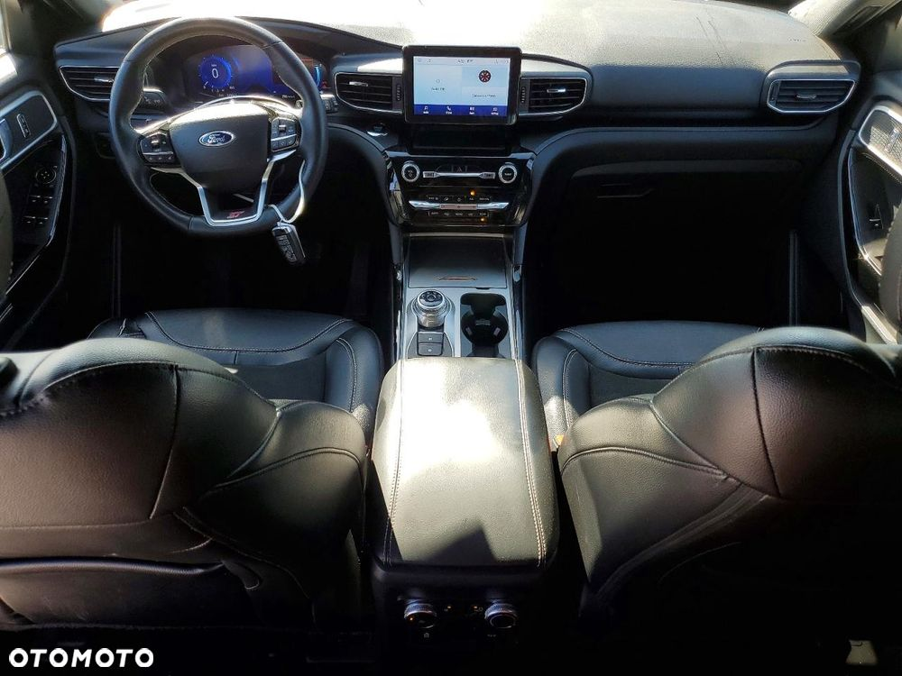
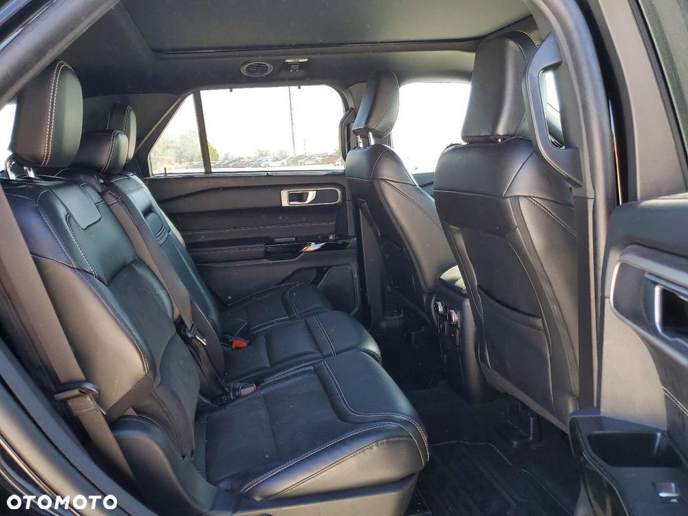
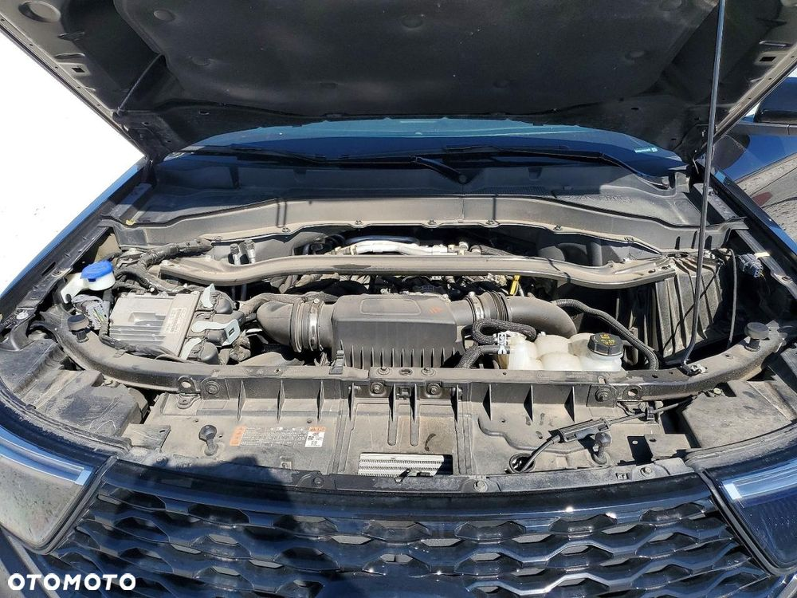

Ford Explorer ST 2023 to dynamiczny SUV klasy premium, który łączy przestronność, nowoczesne technologie oraz sportowy charakter wersji ST. Model ten wyróżnia się mocnymi osiągami i agresywną stylistyką, oferując jednocześnie wysoki komfort podróżowania dla całej rodziny.
Pod maską pracuje potężna jednostka benzynowa V6 z doładowaniem, zapewniająca imponującą dynamikę oraz świetną elastyczność w każdych warunkach. W połączeniu z napędem AWD oraz zaawansowanymi systemami wspomagającymi kierowcę, Explorer ST gwarantuje bardzo dobre właściwości jezdne, stabilność i pewność prowadzenia nawet przy dynamicznej jeździe.
Prezentowany egzemplarz odpala i jeździ. Posiada uszkodzenia w tylnej części nadwozia, co czyni go atrakcyjną opcją dla osób poszukujących auta do naprawy lub inwestycji z dużym potencjałem.
Wnętrze utrzymane jest w nowoczesnym i sportowym stylu – przestronne, komfortowe i bogato wyposażone. System multimedialny, cyfrowy kokpit oraz wygodne, sportowe fotele zapewniają wysoki poziom komfortu zarówno podczas codziennej jazdy, jak i dłuższych tras.
Model wyróżnia się masywną, dynamiczną sylwetką oraz sportowymi detalami charakterystycznymi dla wersji ST. To połączenie mocy, funkcjonalności i nowoczesnego designu – idealne dla osób, które oczekują od SUV-a nie tylko przestrzeni, ale także prawdziwych emocji za kierownicą.
Dlaczego warto kupić z nami?
✔ Oszczędność nawet do 40% względem rynku europejskiego
✔ Import z USA i Kanady od sprawdzonych źródeł (ubezpieczalnie, leasingi)
✔ Dokładna weryfikacja historii i stanu pojazdu przed zakupem
✔ Kompleksowa obsługa – od zakupu, przez transport, po formalności
✔ Możliwość naprawy i dostosowania auta do norm europejskich
✔ Odbierasz gotowy, przygotowany samochód
Działamy na rynku od 2016 roku – zaufały nam setki klientów.
Szukasz czegoś innego?
Powiedz nam, czego potrzebujesz (kolor, rocznik, silnik, budżet) – znajdziemy idealne auto specjalnie dla Ciebie.
Kontakt i lokalizacja
Kobyłka (pod Warszawą)
ul. Nadarzyńska 83
Pn–Pt: 09:00–17:00 (lub po umówieniu)
www.usautomotive.pl
Facebook: U.S Automotive – import aut z USA i Kanady
Cena zawiera wszystkie koszty importu i transportu pod wskazany adres.
(Pozostają: akcyza, rejestracja, ewentualna naprawa)
Ogłoszenie ma charakter informacyjny i nie stanowi oferty handlowej w rozumieniu art. 66 §1 Kodeksu Cywilnego.







